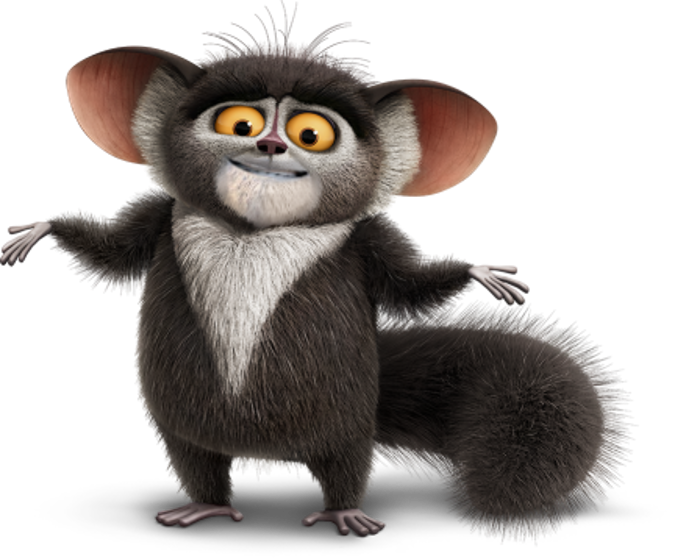

<
MauriceTheLemur
Maurice the Aye-Aye Lemur!

<Maurice is an aye-aye lemur and King Julien's adviser and right-hand man. He is a major character in the films, a major character in The Penguins of Madagascar, and the deuteragonist of All Hail King Julien.